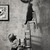
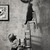

Рене Магритт (1898-1967)
Магритт Рене (Magritte Rene), бельгийский художник-сюрреалист. Родился 21 ноября 1898 года. С 1916 по 1918 Магритт обучался в Королевской Академии искусств в Брюсселе (Academie Royale des Beaux-Arts). По окончании работал оформителем обоев и художником по рекламе. Ранние работы Магритта были выполнены в в стиле кубизма и футуризма под влиянием творчества французского художника Фернана Леже. В 1922 Магритт вступил в брак с Жоржеттой Бергер, с которой познакомился в пятнадцать лет. После свадьбы она стала единственной моделью для картин художника.
Знакомство с метафизической живописью Джорджа де Кирико и поэзией дадаистов было важным поворотным пунктом для творчества Магритта. В 1925 Магритт входит в группу дадаистов, сотрудничает в журналах "Aesophage" и "Marie" вместе с Жаном Арпом, Франсуа Пикабия, Тристаном Тцара и другими дадаистами. В 1925-1926 Магритт написал "Оазис" и "Затерянного жокея" - свои первые сюрреалистические картины. В 1927-1930 годах Рене Магритт проживал во Франции, участвовал в деятельности группы сюрреалистов, тесно сблизился с Максом Эрнстом, Сальвадором Дали, Андре Бретоном, Луи Бунюэлем и особенно с поэтом Полем Элюаром.
В Париже система концептуальной живописи Магритта окончательно сформировалась и осталась почти неизменной до конца жизни художника.
В картинах живописца Рене Магритта постоянно присутствует ощущение напряженности и таинственности ("Компаньоны страха", 1942; "Букет слез", 1948; "Объяснение", 1954). Странный ночной пейзаж блестит под освещенными дневным светом небесами ("Империя света", 1954). Магритт мастерски создавал контраст между прекрасно выписанными странными сочетаниями ирреальных предметов и естественным окружением, с этой целью художник активно использовал в своих картинах символы зеркал, глаз, окон ("Фальшивое зеркало", 1935; "Ключ к пространству", 1936; "Прекрасный мир", 1962). Увлечение Магритта философией и литературой нашло отражение во многих его картинах, например, "Гигантесса" (по Бодлеру), 1929-1930; "Область Арнхейм" (по Эдгару По), 1938. В 1940-х годах Магритт попытался изменить свой стиль живописи.
Но так называемые периоды творчества художника “plein-soleil” в 1945-1947 и “epoque vache” в 1947-1948 годах не оказались сколько-нибудь эффективными и Рене Магритт вернулся к своей манере письма. В 1950-х годах Магритт выполнил два цикла фресок: "Пространство очарования" для казино Knokke-le-Zut (1953) и "Несведущая фея" (1957) для Palais des Beaux-Arts в Шарлеруа. Рене Магритт умер 15 августа 1967 года в Брюсселе от рака в возрасте 69 лет.
Картины Рене Магритта:
© Сайт создан  Рубеном и Анной в 2014 году.
Рубеном и Анной в 2014 году.
Другие наши проекты: Social Coins | Forgiveme.today